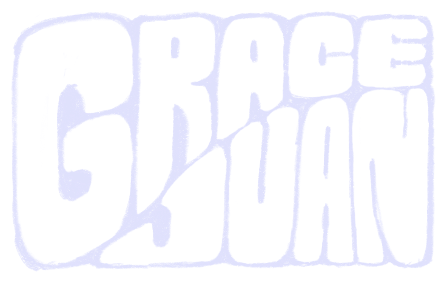
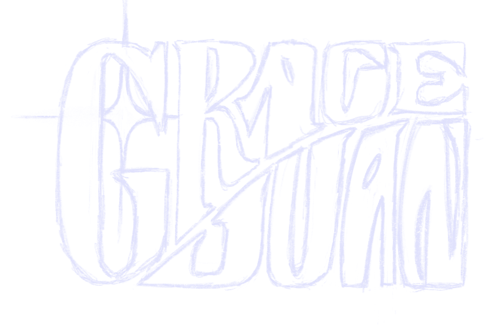
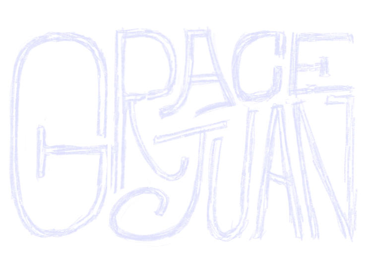

The Wordmark
The logo on the home page is hand-lettered — eight versions of my name, drawn one letter at a time, that the page morphs between when you click it.
The mark up top isn’t a typeface. It’s eight separate drawings of “grace juan,” each lettered by hand, and clicking the home page warps from one into the next. This is how they were made.
All of it was drawn in Procreate on an iPad with an Apple Pencil — the same way I’d sketch anything else, just aimed at my own name. The hard part wasn’t drawing one version; it was drawing eight that could trade places without the layout lurching.
Then I sketched the letters in by hand inside that frame, over and over, pushing the style somewhere new each pass — from blocky and solid to thrashed, condensed, almost-illegible. Same bones, eight different hands:



Each finished drawing was then traced into a clean SVG, and the home page warps between them on click — so the logo is never quite the same twice. All eight, as static art: